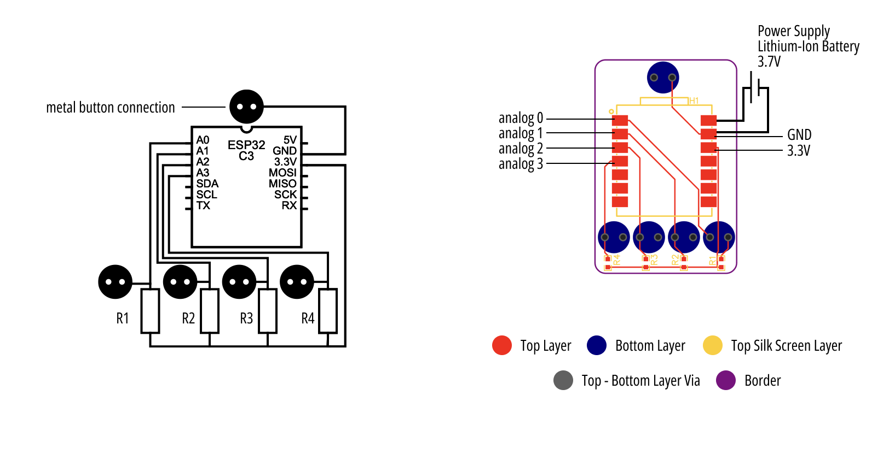

Processor
We mainly used Seeed Studio XIAO ESP32C3 to serve as the MCU of most of our applications (except for the piano pillow one, because the ESP32C3 only has 4 Analog pins). This is a IoT mini development board based on the Espressif ESP32-C3 WiFi/Bluetooth dual-mode chip and thus supports WiFi and Bluetooth5 connectivity.
We designed a PCB board to build voltage divider circuit and extend A0, A1, A2, A3, and GND pins for metal button connection. Download Gerber file for the processor PCB.
Then male-side of the metal buttons are welded onto the bottom solder pad of the PCB, and female-side of the metal buttons are sewn on the fabric.
All fabric inputs are connected between one of the Analog pins and the GND. The resistance value for the voltage divider circuit needs to be determined according to the resistance of the fabric input to be connected. For example, if the double-coated area's resistance is around 4kOhm (it is connected to A0), you may want to use a 5KOhm resistance for R0. The rule is that the resistance value of the voltage divider circuit needs to be quite close to the resistance of the fabric input.
The analog pin can also be used to drive output components, which will be covered later.
After the circuit is built, we only need to read the analog input from one of the Analog ports and compare the value with the baseline. Then we can easily access the variation in the resistance of the fabric input, which will be changed, for example, when we press a pressure sensor or strech a strain sensor. As a result, we can use the change in the resistance to sense these inputs.
const float baseline = 1.7; // preset baseline
const float low_threshold = 1; //preset low-threshold
void setup()
{
pinMode(A0, INPUT);
Serial.begin(9600);
}
void loop()
{
int val0 = analogReadMilliVolts(A1); // return: mV unit
// or int val0 = analogReadMilliVolts(A1); return 0-1023
Serial.println(val0);
if (val0 < low_threshold)
{
// e.g., for a pressure sensor, when it is pressed, its resistance will decrease, so will the val0
// when the val0 is lower than a preset threshold, it means the pressure is higher than a preset threshold
// then, do something
}
delay(2000); // sample every 2s
}
Output
The output components we used include: buzzers, LED, and vibrators. Most of them have 3 pins (except for the LED, who only has two pins). As a result, we also designed a PCB template to extend these pins for metal button connection on fabrics. Download current Gerber file for the output PCB.
But actually, we only need two pins from each output (for the 3 pin output components, we connect their Vcc and Vin, and connect it to one analog ports of the ESP32C3). One future work is to redesign and improve this PCB design and decrease its pins to two ports, which can make it easier for connection.

After the circuit is built, we only need to use the analog port as an output from the MCU to drive these output components.
const int ledPin = A0;
const int buzzerPin = A1;
const int vibratorPin = A2;
void setup() {
pinMode(ledPin, OUTPUT);
pinMode(buzzerPin, OUTPUT);
pinMode(vibratorPin, OUTPUT);
}
void loop() {
// LED
digitalWrite(ledPin, HIGH); // turn on LED
delay(1000); // shine 1s
digitalWrite(ledPin, LOW); // turn off LED
// Passive Buzzer
tone(buzzerPin, 1000, 1000); // 1000Hz, 1s
// If it is an active buzzer, we only need to output a high voltage to the buzzerPin
// by controlling the high voltage delay time, we can realize different frequencies
// e.g. digitalWrite(buzzer,HIGH);
// delay(1);//wait for 1ms; or delay(2);//wait for 2ms
// digitalWrite(buzzer,LOW);
// delay(1);//wait for 1ms; or delay(2);//wait for 2ms
// vibrator
digitalWrite(vibratorPin, HIGH); // start vibration
delay(1000); // vibrating 1s
digitalWrite(vibratorPin, LOW); // end vibration
delay(1000);
}